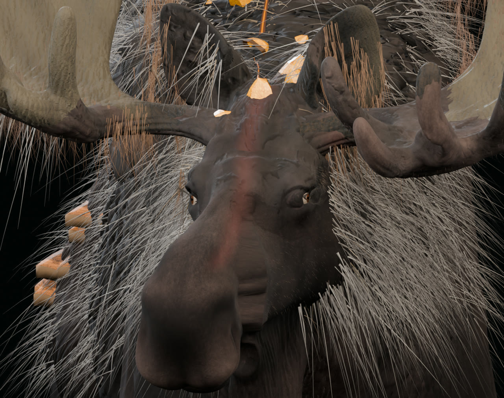
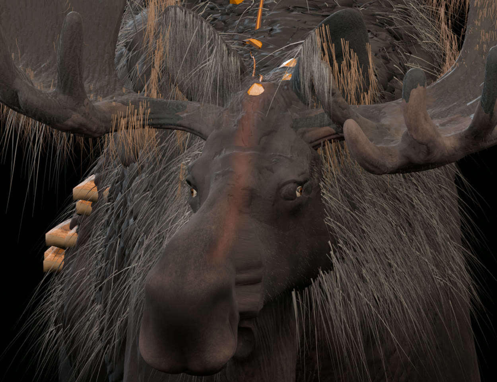
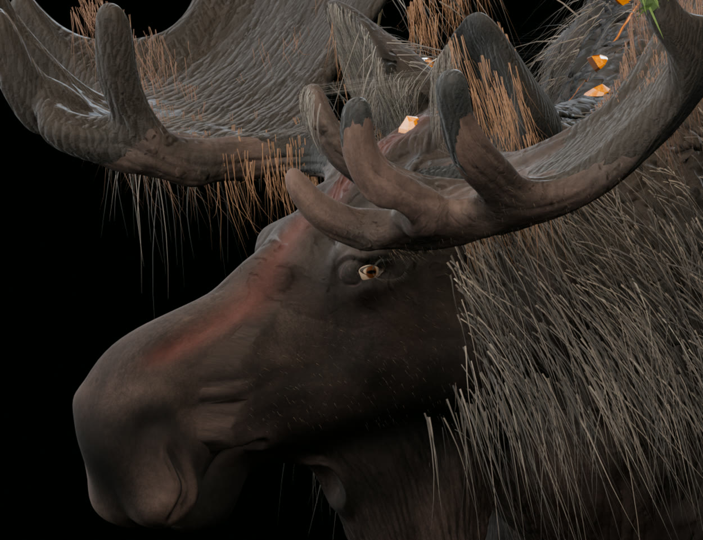

GUSTAVA · ZONA 2040 · MUTANT MOOSE · BLENDER 5.2
V34B — реальные рендеры после правки видимой шерсти
Это рабочая 3D-модель Blender, не генерация картинки. Найдена предыдущая ошибка: объект LONG_DISEASED_FUR_TUBES_12000 скрыт для рендера. Изменены те объекты, которые действительно формируют видимый мех: V30T_EXTRA_ROOTED_SHAGGY_HUMP_MANE и V30C_SOFT_TATTERED_HUMP_HAIR.
Сравнение с V33C2


Вид спереди и 3/4

Сделано в редактируемом .blend
Изменена геометрия 12 575 реальных прядей гривы и 4 937 покрывающих волосков. Тёмная гамма, направленные вниз изгибы, ослабленные янтарные осколки и приглушённый материал рогов. На лбу добавлено 2 067 прядей, физически привязанных к поверхности головы. Сохранены исходные текстуры 4K и анимации глаз.
Созданы GUSTAVA_FOREST_MOOSE_V34B_FORELOCK_AND_DARK_HORNS_EDITABLE.blend и GUSTAVA_FOREST_MOOSE_V34B_GAME_REVIEW.glb в V34B_FORELOCK_ANTLER_AND_GROOM_TEST на FASEA. GLB проверен: glTF 2.0, 3 клипа, отдельно вращаются оба глаза. Исходная V33C2 сохранена.
Художественный статус: НЕ ПРИНЯТО. Сравнение с утверждённым референсом показывает серьёзное расхождение по скульпту головы, анатомии глаз, форме гривы, рубцам и строению янтаря. Эти проблемы требуют ручной высокой детализации и топологической переработки; текущие процедурные изменения — не 1:1 и не AAA. Unreal Engine импорт и соответствие процедурных материалов после экспорта ещё не проверены.
Только настоящие Blender-рендеры. Референс пользователя не заменён сгенерированным изображением.